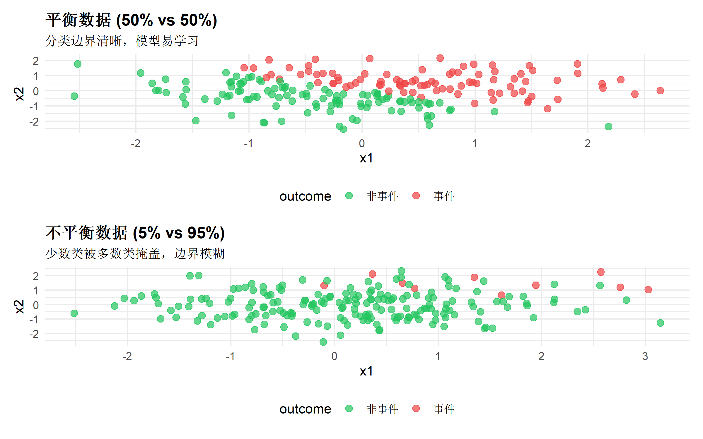

library(tidyverse)
library(patchwork)
# 模拟对比：平衡 vs 不平衡数据
set.seed(2026)
# 平衡数据：50% vs 50%
balanced_data <- tibble(
x1 = rnorm(200, 0, 1),
x2 = rnorm(200, 0, 1),
outcome = factor(ifelse(x1 + x2 > 0, "事件", "非事件"))
)
# 不平衡数据：5% vs 95%
imbalanced_data <- tibble(
x1 = c(rnorm(10, 1.5, 0.8), rnorm(190, 0, 1)),
x2 = c(rnorm(10, 1.5, 0.8), rnorm(190, 0, 1)),
outcome = factor(c(rep("事件", 10), rep("非事件", 190)))
)
# 可视化对比
p1 <- ggplot(balanced_data, aes(x = x1, y = x2, color = outcome)) +
geom_point(alpha = 0.7, size = 2.5) +
scale_color_manual(values = c("事件" = "#ef4444", "非事件" = "#22c55e")) +
labs(
title = "平衡数据 (50% vs 50%)",
subtitle = "分类边界清晰，模型易学习"
) +
theme_minimal(base_size = 11) +
theme(legend.position = "bottom",
plot.title = element_text(face = "bold"))
p2 <- ggplot(imbalanced_data, aes(x = x1, y = x2, color = outcome)) +
geom_point(alpha = 0.7, size = 2.5) +
scale_color_manual(values = c("事件" = "#ef4444", "非事件" = "#22c55e")) +
labs(
title = "不平衡数据 (5% vs 95%)",
subtitle = "少数类被多数类掩盖，边界模糊"
) +
theme_minimal(base_size = 11) +
theme(legend.position = "bottom",
plot.title = element_text(face = "bold"))
p1 / p2